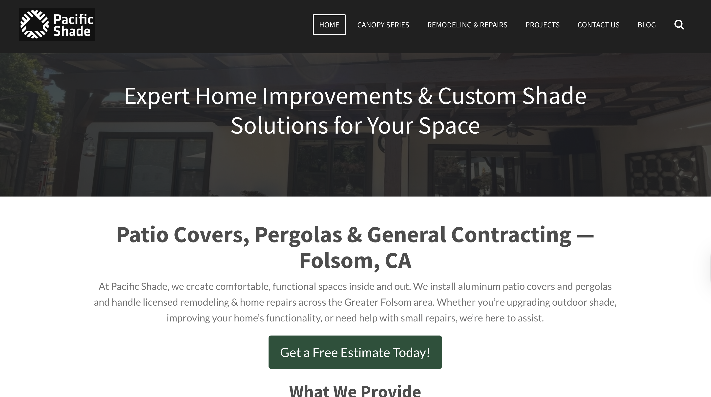
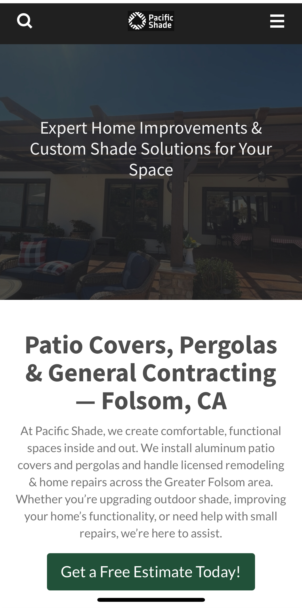

Pacific Shade — Site Rework, Local SEO & Brand Setup
I reorganized and rewrote the site to the owner’s preferences, clarified the copy, cleaned up the HTML structure for search, and focused each page around a single intent. The early push is their Canopy Series and establishing the company as a local contractor with clear proof points.
Screens


Overview
Problem
New business with limited online history. The site mixed multiple ideas per page, copy was wordy in places, and the structure wasn’t helping search engines understand the offering or service area.
Outcome
Tighter pages with one main purpose each, cleaner markup, and language that matches how local customers search. A simple plan to gather reviews and establish credibility while the brand grows.
Responsibilities
- Reworked existing content to the owner’s preferences and tone.
- Cleaned headings, lists, and internal links for crawl clarity.
- Localized keyword research and on-page updates.
- Focused pages around the Canopy Series and contractor services.
- Started the brand/marketing plan and review collection strategy.
- Advised on platform profiles (Facebook, Nextdoor, Yelp).
- Set up ongoing reachability tracking and periodic adjustments.
Approach
- Content pass: trim, clarify, and align to service priorities.
- HTML pass: semantic headings, alt text, internal link map.
- Keyword pass: local terms for services and service area.
- Structure pass: one primary goal per page, obvious next steps.
- Brand & reviews: GBP review plan; basic social/local profiles.
- Measure & iterate: GA4/Search Console checks and tune-ups.
SEO & Marketing
What shipped
- On-page SEO: titles/meta, H1–H3 outlines, internal links, alt text.
- Local intent: service-area language and service keywords.
- Credibility: review request plan and profile checklist.
What’s ongoing
- Tracking reachability and queries; adjusting copy/navigation.
- Expanding galleries and proof points as new work is completed.
Testing
Checks: page intent clarity, mobile readability, link paths, and basic accessibility (keyboard focus, contrast, alt text).
- Headings and landmarks read cleanly with a screen reader.
- Primary CTAs visible at top and bottom on mobile.
- Titles/meta render as expected in SERP preview tools.